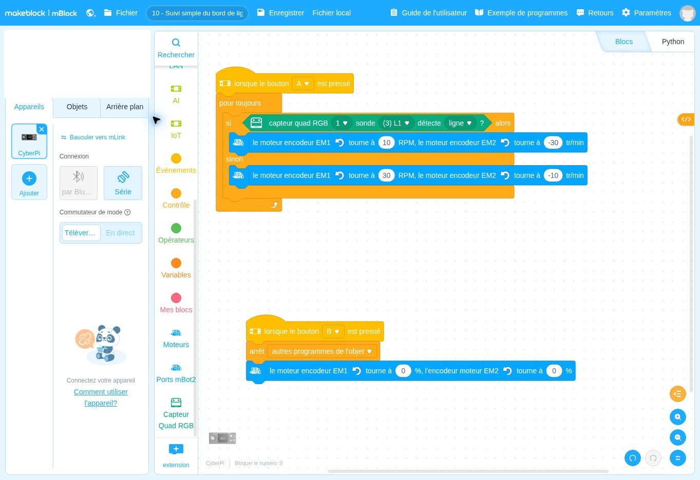

lorsque le bouton A ▾ est presséDépart
Ce que fait ce bloc : Bloc de départ : le suivi commence quand on appuie sur A.
Pourquoi il est là : Vous choisissez le moment du départ.
Pourquoi alterner deux corrections permet-il de suivre une ligne ?
Le robot suit une ligne noire en zigzaguant légèrement : s’il voit la ligne il tourne un peu d’un côté, sinon de l’autre. Appuyer sur B l’arrête.
Un programme mBlock est un empilement de blocs, à lire de haut en bas. Chaque bloc a une couleur qui indique son rôle. Voici chaque bloc de cette fiche, dans l’ordre, expliqué simplement.
DépartContrôleAction du robotInformationÉcranMémoireCalcul
Les couleurs ci-dessous sont proches de celles de mBlock. Les blocs sont redessinés ici pour être lisibles ; la vraie capture d’écran est plus bas.
Ce que fait ce bloc : Bloc de départ : le suivi commence quand on appuie sur A.
Pourquoi il est là : Vous choisissez le moment du départ.
Ce que fait ce bloc : Répète sans fin ce qui est à l’intérieur.
Pourquoi il est là : Le robot doit tester la ligne en permanence tout au long du trajet.
Ce que fait ce bloc : Décision à deux branches : SI la sonde L1 voit la ligne, ALORS le robot fait la première commande ; SINON, il fait la seconde.
Pourquoi il est là : Le robot ne « voit » pas la ligne en entier : il n’a que deux réponses possibles (je suis sur la ligne / je n’y suis pas), et il adapte sa trajectoire.
Dans ce bloc, il y a :
Mot à connaître. Le robot suit le « bord » de la ligne : il reste à la limite entre la ligne noire et le fond clair.
Ce que fait ce bloc : Règle la vitesse de chaque roue : la roue gauche (EM1) lentement, la roue droite (EM2) plus vite. Le robot tourne alors vers le côté de la roue lente.
Pourquoi il est là : Si la sonde est sur la ligne, il faut corriger la direction : on ralentit une roue pour faire virer le robot.
Dans ce bloc, il y a :
Mot à connaître. « RPM » et « tr/min » = tours par minute. Une roue plus rapide que l’autre fait tourner le robot.
Ce que fait ce bloc : Même chose, mais avec les vitesses inversées : maintenant c’est la roue droite qui est lente. Le robot vire de l’autre côté.
Pourquoi il est là : Si la sonde n’est plus sur la ligne, il faut revenir vers elle : on corrige dans l’autre sens. Le robot zigzague autour du bord de la ligne.
Ce que fait ce bloc : Bloc de départ du bouton d’arrêt.
Pourquoi il est là : Il faut toujours pouvoir stopper la boucle infinie.
Ce que fait ce bloc : Arrête les autres scripts, dont la boucle de suivi.
Pourquoi il est là : Sans cela, la boucle de suivi relancerait aussitôt les moteurs.
Ce que fait ce bloc : Met la puissance des deux moteurs à zéro.
Pourquoi il est là : Le robot s’immobilise.
C’est exactement ce que fait le programme, écrit avec des phrases. Les lignes décalées vers la droite sont à l’intérieur d’une répétition ou d’un choix.
Quand j’appuie sur A :
je répète sans fin :
si la sonde L1 voit la ligne :
la roue gauche tourne lentement, la roue droite plus vite (le robot vire vers la gauche) ;
sinon :
la roue gauche tourne plus vite que la droite (le robot vire vers la droite).
Quand j’appuie sur B :
j’arrête les autres scripts et les deux moteurs.Retrouvez dans cette capture les blocs expliqués ci-dessus. Vous pouvez aussi ouvrir le fichier dans mBlock pour le tester et le modifier.

Autres solutions : voir la page Dépannage. Ces fiches n’ont pas été testées avec un robot réel : vos observations peuvent différer légèrement.
Pour être sûr d’avoir compris, changez un seul élément, prévoyez le résultat, puis vérifiez avec le robot.